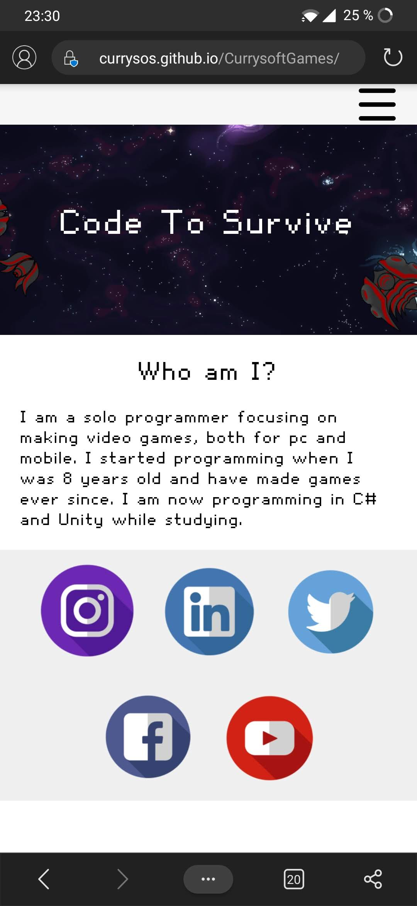

Jag ska göra en hemsida för mitt spel. Jag kommer använda denna hemsida för att visa mitt spel och kanske fler spel i framtiden så jag vill göra den så bra som möjlig. Min målgrupp är gamers (folk som vill spela mitt spel), speltestare (folk som testar spelet på buggar) och programmerare (folk som vill vara med att utväckla fler spel). Jag kommer uppgradera min sida som jag har nu och i stort sätt ändra allt på den. Dock kommer jag bygga upp hemsidan på nytt eftersom jag lärt mig hur man använder fler verktyg ny än tigiare och den hemsidan jag använder nu är jag inte nöjd med, den ser gammaldags ut.
Startsidan kommer vara en översyn på vad du kommer möta när du går in på hemsidan och vad Currysoft Games är för företag, vilka spel jag gör och min vision för framtiden. Det kommer dessutom finnas någon bild på det jag jobbar på nu.
Games-sidan är ganska självförklarande men den kommer innehålla mer detaljerad information om mina spel, trailers, hur man laddar ner dem och lite bilder. Så småning om när jag gjort lite fler spel så kommer jag lägga till en till sidan som är som ett galleri med spel och så ska man kunna klicka för ett spel så kommer varje spel ha en egen sida. Detta kommer jag dock göra i framtiden då ett spel tar typ ett år att göra när man är ensam.
Blog-sidan kommer jag använda när jag vill publicera nyheter och uppdateringar från min resa som Indie-spelutvecklare. Den kommer mestadels ha text på sig så kommer inte lägga fokus på att stylea bilderna men all min css kommer att vara bakåt kompatable så det kommer att gå att göra smidigt ändå.
About me-sidan kommer att ha information om mig i sig. Det kommer finnas bakgrund till varför jag började göra spel, vad mina intressen är och vad jag tänker för framtiden. Det kommer dessutom finnas en bild på mig så man vet typ vem jag är.
Kontakt-sidan kommer jag använda för att skriva mina kontaktuppgifter som man ska använda för att kontakta mig angående spelsaker. Den kommer att vara så simpel och straight-forward som möjligt. När jag blir ett större företag (om det händer) så kommer det finnas API integration med Google maps och Discord via Iframes som kommer göra det möjligt att göra sidan till semidynamisk.
Skiss för dator design:
 >
>
Skiss för mobil design:

Jag kommer att bygga upp hela designen utifrån-in. Det första lagret är en stor Grid som kommer att dela in hemsidan i tre delar: header, content och footer. Jag kommer sedan dela in desa tre delar i små subdelar. Headern kommer att vara en navbar och kommer att använda flex-box dels för att lättare optimera för mobil men också för att ha mer frihet i placering. Content kommer också att använda flexbox som har ett uppdrag: att lägga varje inlägg under varandra. Varje inlägg kommer att anpassas utifrån deras behov. Om det endast är text så kommer programmet (CSS) automatiskt göra det till ett blockelement som läggs i mitten. Om det ska vara en bild och text bredvid så kommer programmet dela in det i en flex-box och lägga texten och img bredvid varandra.
Jag kommer att bygga upp css som ett skelett och sedan påläggs attributer via klasser och i speciella fall IDs. Det kommer alltså finnas en bas CSS som kommer att fungera utan att använda klasser eller IDs. Om jag t.ex vill att en bild ska ligga bredvid en text så ska man kunna diva in dem och ge dem klassen "split" och så ska stylsheetet fixa det. Detta kommer göra det mycket enklare att lägga upp fler inlägg i framtiden vilket i sin tur kommer att leda till att jag inte behöver lägga så mycket tid att skriva CSS och fokusera på spelen och HTML. I vissa specialfall så kommer det finnas IDs men detta endast om det är styleing som den delen (och endast den) ska ha. Det kan vara att just ett inlägg ska ha en annan bakgrundsfärg eller storlek.
Slutligen så kommer jag att jobba med effekter så att hemsidan kommer att bli roligare att titta på och se mer proffisionell ut. Jag kommer att jobba med Parrallex effekter och 3D djup samt fade-in och out effekter, detta kommer ske inom Javascript.
| Vecka | På lektionen | Utanför lektionen |
|---|---|---|
| 4 |
planering av projekt, skriva i planeringsdokumentet |
Ingenting än så länge |
| 5 |
börja med skiss på papper och en lista på funktioner och innehåll. |
Hitta referenser på andra fina hemsidor och göra en liten målgruppsundersökning. |
| 6 |
Fortsättning med skiss och börja sätta upp med html och det digitala |
Börja med programmering, layouten av startsidan |
| 7 |
Lov... |
Fortsätta programmera, både på spelet och hemsidan |
| 8 |
Sätta in information på startsidan och börja med stylingen. |
Börja på de andra tabbarna |
| 9 |
Fortsätta med finslip av design och göra fler tabbar |
Programmera |
| 10 |
Parrallex effekter och fade-in/out effekter efter scroll. |
Programmera |
| 11 |
Leka med javascript, animationer och SVGs |
Fortsätt leka |
| 12 |
Finslipa allt |
Lämna in |
Idag har jag Planerat och idégenererat. Jag har kommit på en generell ide angående vad min hemsida kommer att handla om och hur den ska vara uppbyggd. Jag har kommit ganska långt och följer än sålänge planeringen som jag skrev idag. Nästa gång ska jag skissa innehåll och layout och skriva en list (göra en trello) med funktioner som ska finnas och saker som måste göras.
Börjat med skisser och innehåll- och funktionslista. Jag har dessutom skrivit mer om idén i planeringen, nästa gång ska jag fortsätta med skisserna eftersom jag inte är riktigt klar än.
Fortsatte med skisserna och Började med lite HTML och CSS. Jag har programmerat upp och planerat ut den generella strukturen som hemsidans css kommer att använda och hur elementen kommer att jobba med varandra. Jag har dessutom skrivit i planeringsdokumentet under punkt 2 hur det kommer att fungera och lagt upp bilderna som visa designen. Jag ligger i fas med planeringen och allt går smidigt, jag har dock mycket med övningskörningen nu så jobbar inte hemma med Web men jag tror inte jag kommer att komma i ofas på grund av det. Nästa gång är planen att fortsätta programmera hemsidan.
Har uppkörning och teoriprov nästa vecka så har pluggat på vägmerken och trafikregler. Kommer att jobba hemma så jag tar ifatt det som jag egentligen skulle gjort idag. Framtidsplanen är därför samma som förra veckans.
Fick körkortet!!!!!!!!! och har fortsatt med html och css och har spenderat en stor mängd tid till att hjälpa andra. Jag ligger fortfarande efter från planeringen eftersom jag mestadels hjälp andra under denna lektion. Jag borde egentligen jobba på mitt egna projekt men man får bra insyn och andra vinklar på hur man kan tackla problem genom att hjälpa andra i deras scenarion. När jag programmerar själv så har jag alltid en plan och struktur som jag följer för att det ska vara så lätt som möjligt att refererar från och till koder. Alla tänker dock inte på detta och jag har därför hjälp dem och faktiskt lärt mig mycket själv av det. Min plan nu är att jobba hemma i helgen då jag inte har något planerat och nstan göra klart hemsidan. På nästa veckas lektion är planen alltså att börja med effekterna som jag beskrivit ovan.
Jag har gjort en massa utanför skolan, och i skolan. Jag har fixat med navbaren och stylingen på innehållet. Min hemsidas skelett är i princip klar nu och hemsidan ligger redan (enligt matrisen) på en A-nivå men jag vill mer då denna sida kommer att vara min personliga utanför skolan. Jag har dessutom börjat plugga på 3D effekter som Parrallax-effekten, jag har hittat ett plugin som heter Rellax som jag antagligen kommer att använda då det är simpelt att implementera och kräver ingen förkunskap om detta, vilket skulle ta sin lilla tid att lära sig. Jag ligger nu i fas med planeringen igen och lektionen idag gick väldigt bra. Nästa lektion kommer jag att tackla effekten som gör att inlägg åker in i sidan när man skrollar ner. Detta ser jag ofta på proffisionella sidor och vill därför ha det på min. Jag kommer dessutom att lägga till lite mer HTML och inlägg så att hemsidan inte är helt tom.
Fortsatt med programmeringen och stylingen av hemsdian, fokuserat på skript och olika finslipningar av styleingen. Min styleing är klar och jag har fixat effekten som jag beskrev förra veckan. Jag hittade ett library som heter AOS (rekommenderar) som gör det enkelt att implementera denna funktion. Jag ligger i bra fas med planeringen och allt går bra, nästa gång börjar jag testa med olika webbläsare och med olika mobiler.
Gjort klart allt angående hemsidan och börjat testing. Jag testade med Firefox, Edge, Chrome, Opera och IE. På mobilen har jag laddat ner Firefox, Chrome och Opera och testade med de där också. Jag skrev dessutom på punkt 4 i planeringen och lägger upp bilder från testen. Jag tänker under veckan skriva klart utvarderingen och testingen så jag kan lämna in. Skulle viljat göra klart det idag men han inte då mitt namn verkade vara populärt att skrika om man behövde hjälp. Men kommer fortfarande att hinna klart.
Jag har testat i Microsoft Edge Beta, Google Chrome, Microsoft Edge, Opera, Mozilla Firefox och Internet explorer och den enda som gjorte ett litet problem var IE. På alla andra Webbläsare så fungerade hemsidan perfekt som jag vill att den ska se ut. I IE så fungerade inte griden rätt men det gjorde inte hemsidan oanvändbar då man fortfarande såg all information och funktionerna fungerade fortfarande som de skulle, bilderna var bara väldigt små. Jag har försökt söka upp på internet en lösning till detta problem men kom bara fram till att IE inte stödjer alla de nya funktionerna. Jag titta dessutom på medelåldern av användarna som använder IE vilket är 60+ vilket är utanför min målgrupp så kommer inte lägga tid att fixa det. Alla borde ändå använda en Chromium baserad webbläsare som Opera, Chrome eller Edge Beta då dessa är snabbast, säkrast och lättast. Firefox fungerar också om man har lite RAM på datorn.
Jag testade dessutom hemsidan på alla mobila Webbläsare jag kunde hitta på Google Play store (Allt från chrome till någon unix baserad ulltralätt sak) och hemsidan fungerade lika på alla. Detta beror antagligen på att android är googles och Webbläsarna använder därför Chromium. De telefoner jag testade på var en Oneplus 6T (min personliga), en Iphone SE, Iphone 6s, Iphone 10, Samsung Galaxy S8, Oneplus 3 och en Oppo Phone. Det enda problemet jag fick var på Iphone SE då en av bilderna var för stora och täckte texten vilket jag lätt fixade genom att ändra lite på textens bakgrund så att den beskär bilden vilket leder till att texten alltid kommer att synas.
Skärmdump av Mobiltest på min mobil (Oneplus 6T):
Jag har validerat både CSS-koderna och HTML koderna med CSS- och HTML-validator. Resultatet för Css var felfritt och programmet hittade inga fel. HTML-validator o andra sidan hittade lite varningar angående min struktur och en meningslös error som klagar på att man inte kan har content innanför body, huh?????. Jag kommer inte ändra på hela min struktur nu eftersom det fungerar bra och jag eller Stack-Overflow ser något problem med det. Jag testade dessutom contrastchecker men eftersom all text som man faktiskt ska läsa är svart mot vit så visste jag att det inte skulle bli några problem. Jag har försökt att anpassa de stora rubrikerna så bra som möjligt men de är inte de viktigaste och endast ett ord så det behöver inte vara perfekt.
Här är bilderna på Validator och contrastchecker:


Jag tycker att mitt projekt i helhet gick väldigt bra, nästan allt gick smidigt och det var aldrig som jag inte hade något att göra. jag tycker dessutom att detta prjekt var roligt eftersom man fick mycket frihet och jag kunde experimentera med Javascript mer än innan. Det som inte gick så bra var tajmingen med övningskörningen. Jag tror att jag inte skulle behövt jobba lika mycket hemma om jag inte skulle haft uppkörning mitt under arbetet, jag är dock väldigt glad att det är gjort och att jag nu kan åka med hög musik på natten och sjunga hur högt jag vill till Anime låtar utan att skämmas (=. Jag har lärt mig en massa om hur viktigt det är att planera upp sitt CSS innan man börjar skriva för att underlätta så mycket som möjligt för framtiden. Jag har dessutom lärt mig en massa ny syntax och funktioner och jag vet nu hur man implementerar libraries och använder dem på sin sida.
Om jag skulle gjort detta igen så skulle jag från början strukturerat min CSS på det sättet som det är nu. När jag började projektet så visste jag väldigt lite om hur man refererar olika taggar och headers m.m så jag behövde skriva om mycket av min CSS i mitten eftersom jag inte var nöjd med strukturen av min CSS vilket tog väldigt mycket tid. Jag vet nu mer om det så skulle fokuserat på det redan från början (men man lär sig av sina misstag). Om jag istället skule fokuserat på ett klassbaserat css system så tror jag att det skulle vara mycket svårare att skriva men att det kanske skulle vara lättare att se vad elementen gör och är till för. De flesta i skolan använder klasser för allt men jag tycker att det är jobbigt och svårt att utöka ett system som bara använder klasser så valde att inte göra det.
Har pratat med några proffessionella Webbutvecklare och tänker antagligen byta till ett annat språk som jag gör hemsidan i. Jag kommer att skriva om den i något som heter "Blazer" för C#. Denna strukturen är otroligt mycket snabbare eftersom att den använder en "Internal server" funktioner vilket betyder att sidan laddas ner progressivt i bakgrunden lokalt på din dator när du trycker på länken så att du slipper ladda in varje sida från en server och har dem lokalt på din dator direkt, detta leder till en enorm prestanda ökning. Blazer, som sagt innan, använder också C# för att style och funktioner vilket är ett snabbare språk än javascript eller css och eftersom jag använder C# när jag gör spel så ligger det närmare hjärtat och känns mer naturligt att skriva i. Du kan söka på blazer för att få mer information om det, jag lärde mig detta av David Opdendries (Zoe´s pappa), det är det han använder för sin sida. Det är en ganska cool teknologi. Detta kommer att göra så att stora bilder eller filer kommer att kunna laddas in snabbare.
P.S Noah från framtiden här. Detta var det som jag tappade när jag försökte få LGF att fungerar för att kunna pusha större filer.